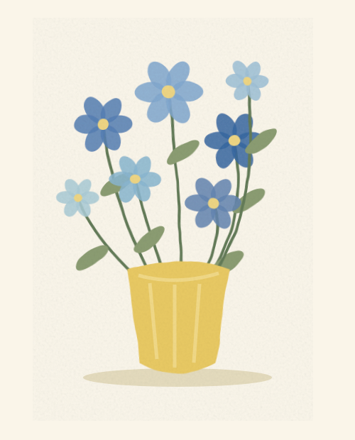
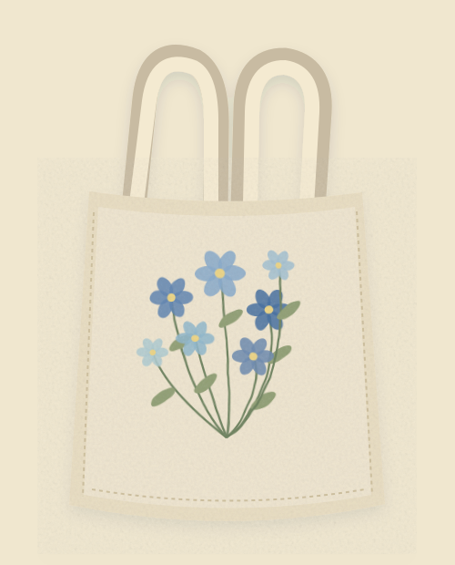
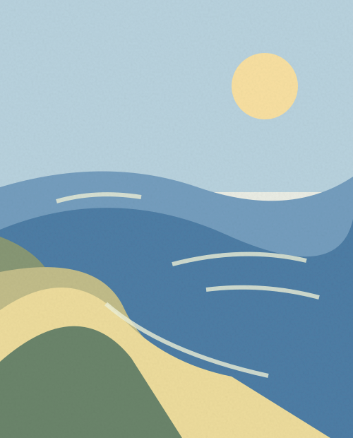

â³ A little art. A lot of heart.
Little things,
made with
art & love.
A little corner of creativity where every piece tells a story. Handmade treasures, original paintings, and art made just for you.
â¡ Made by hand, never quite the same.

a little bloom for your day

handmade
happiness â¡
The collection / 01
Little things to fall for.
A little preview of our creative world. Browse the collection â
The art wall / 02
A small gallery.
A whole lot of feeling.
Color, quiet moments, and a little imagination.
Take your time. Stay a while.
A work in progress, always. Just like us. â¡
your idea, a little color,
and a whole lot of love.
Made just for you / 03
Have something
special in mind?
Turn your ideas into personalized artwork. A favorite memory, a thoughtful gift, or something you've always imagined. Let's create something meaningful together.
Talk with Leigh about your idea, preferred size, style, availability, and pricing.
Request a commission on Facebook âAll the details, one friendly conversation.Behind the brush / 04
A little creativity.
A little bit of Leigh.
Welcome to bambi.byleigh, a creative little space for handmade treasures and original art.
Here, art belongs in everyday moments: a bag you take everywhere, a painting in your favorite corner, a gift that says something words can't.
The creative journey
From soft watercolor florals to expressive acrylics and playful illustrations, every piece begins with an idea and grows through color, texture, and a little experimentation.
Our philosophy
Imagination, care, and love go into every creation. Handmade means every brushstroke has its own personality. That's the lovely part.
Get to know us on Facebook â
Art makes
the ordinary
a little more
extraordinary.